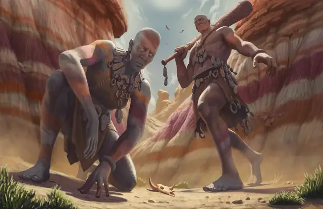

Каменный великан
Stone Giant
Огромный Великан, Нейтральный

Класс Защиты 17 Инициатива +5 (15)
Хиты 126 (11к12 + 55)
Скорость 40 футов
| мод | спас | ||
|---|---|---|---|
| СИЛ | 23 | +6 | +6 |
| ЛОВ | 15 | +2 | +5 |
| ТЕЛ | 20 | +5 | +8 |
| мод | спас | ||
|---|---|---|---|
| ИНТ | 10 | +0 | +0 |
| МДР | 12 | +1 | +4 |
| ХАР | 9 | −1 | −1 |
Чувства Тёмное зрение 60 футов, пассивное Восприятие 14
Языки Великаний
Опасность 7 (2 900 опыта; БВ +3)
Действия
Мультиатака. Великан совершает две атаки Каменной дубиной или Валуном в любой комбинации.
Каменная дубина. Бросок рукопашной атаки: +9, досягаемость 15 фт. Попадание: 22 (3к10 + 6) Дробящего урона.
Валун. Бросок дальнобойной атаки: +9, дистанция 60/240 фт. Попадание: 15 (2к8 + 6) Дробящего урона. Если цель — существо Большого размера или меньше, она становится Опрокинутой.
Реакции
Отбивание снарядов (перезарядка 5–6). Условие: По великану попадают броском дальнобойной атаки, и он получает Дробящий, Колющий или Рубящий урон от неё. Эффект: Великан уменьшает полученный от этой атаки урон на 11 (1к10 + 6), и если урон снижается до 0, великан может перенаправить часть силы атаки. Спасбросок Ловкости: Сл 17, одно видимое великаном существо в 60 футах. Провал: 11 (1к10 + 6) Силового урона.
Бонус мастерства +3
Среда обитания Горы, Подземье
Сокровища Оружейные
Каменный великан
Великан земли
Каменные великаны созерцают силу и постоянство земли в глубоких пещерах и среди горных каньонов. У каменных великанов грубые черты лица, а их кожа покрыта узорами и окрашена в те же тона, что и скалы рядом с их жилищами. Благодаря этим особенностям они легко сливаются с окружающими камнями и скалами, несмотря на свои внушительные размеры.
Каменные великаны редко вмешиваются в дела других великанов или существ поменьше. Большинство из них не спешат действовать, предпочитая стоически переносить трудности или пережидать опасные времена. Когда же их побуждают действовать — особенно когда под угрозой оказываются древние достопримечательности или их жилища, — каменные великаны готовы высвободить мощь гор и сокрушить врагов с силой опозня.
Как правило, каменные великаны погружены в размышления о чудесах природы, таких как горные пики, кристаллические образования и мистические петроглифы. Некоторые из них обладают обширными знаниями о магии и тайных посланиях, скрытых в недрах земли. Живущие в Подземье великаны нередко считают мир поверхности и его обитателей сном, которые видят спящие первозданные, странные боги или другие сущности.